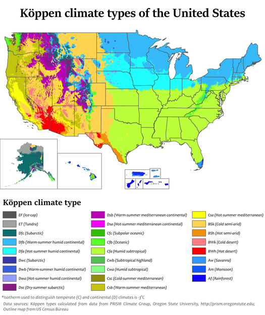
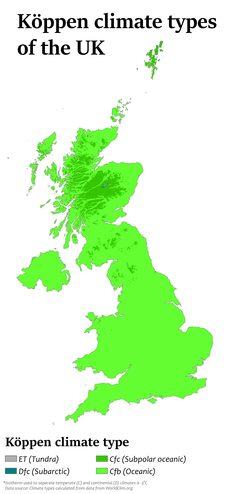
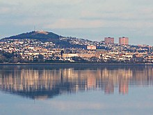

The climate of the United States varies due to changes in latitude, and a range of geographic features, including mountains and deserts.
Generally, on the mainland, the climate of the U.S. becomes warmer the further south one travels, and drier the further west, until one reaches the West Coast.
Daily high temperatures range from 21 to 27 ° in the summer to 10 to 16 ° in winter, with low temperatures from the 16 ° in summer. Early summers can often bring cool, overcast weather to coastal California.
In general the climate of the UK is cool and often cloudy and rainy. High temperatures are infrequent. The climate in the United Kingdom is defined as a oceanic climate, or Cfb on the Köppen climate classification system, a classification it shares with most of north-west Europe.
The United Kingdom straddles the higher mid-latitudes between 49° and 61° north on the western seaboard of Europe. Since the UK is always in or close to the path of the polar front jet stream, frequent changes in pressure and unsettled weather are typical. Many types of weather can be experienced in a single day. In general the climate of the UK is cool and often cloudy and rainy. High temperatures are infrequent
